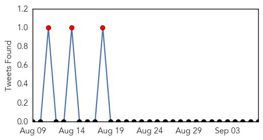

30 Day Trends
Web: 1 alerts, 1 warnings
Twitter: 4 alerts, 0 warnings
Top Articles:
- 0.994
- Dengue fever cases rise in Taiwan
- 0.989
- Taiwan CDC urges caution as ...｜Society｜WCT
- 0.985
- Taiwan escalates efforts as dengue fever cases near 6,000 - Xinhua
- 0.983
- Hospitals running out of beds amid spurt in dengue cases
- 0.970
- Tainan Enterprises : Dengue fever outbreak in Tainan could tail off at month's end: CDC
- 0.970
- Viral fever threat grips city, 250 cases reported per day
- 0.965
- Viral fever threat grips city, 250 cases reported per day
- 0.950
- Dengue cases climb to 1,259; civic, health agencies on toes
- 0.915
- Dengue scare: 1,259 cases recorded in Delhi, highest after 2010
- 0.742
- Mobile phone records may predict epidemics of mosquito-borne dengue virus
- 0.690
- Public health: Jinnah Hospital among sites with dengue larvae
Top Tweets:
- 0.647
- Flavivirus news: Public health: Jinnah Hospital among sites with dengue larvae - The Express Tr... http://t.co/seJxOpbJcB pathogenposse
Web/News Articles

Tweets
Article Locations

Article Confidences